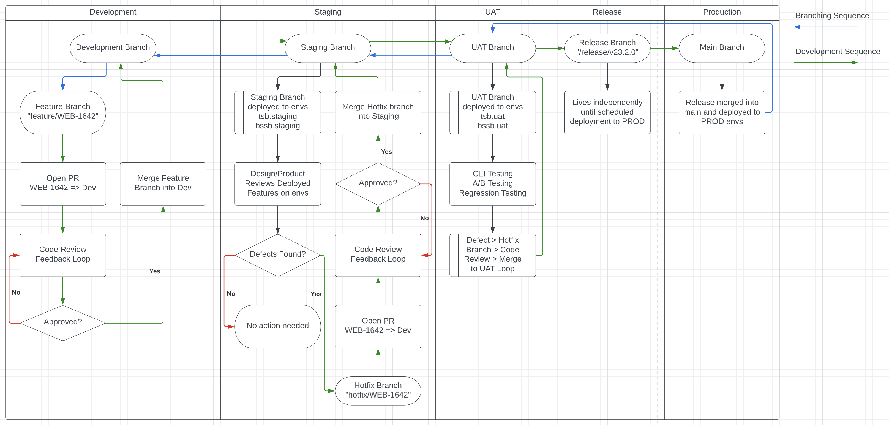

class: center, middle # The Staging Branch --- # Topics 1. Staging breaks a lot - how do we fix it? --- # Why does Staging matter? .bullets[ - The **Staging** branch is deployed to the Staging Environment. The Staging Environment is what QA sees. - **If it is broken, they can't work.** - When it breaks, we (the web developers) have to stop what we're doing and fix it. - **This is a waste of time.** ] --- # Why Staging Breaks? .bullets[ - We do not currently have a "main" protected branch. - The general rule is if QA needs to see it, we merge it to **Staging**. - All other code can be merged right into **Main** - This means that our implicit "source of truth", **Main**, can frequently be out-of-sync with **Staging**. - Our deployment process by git branch, is as follows: - feature branch merged into staging branch -> deployed to staging environment - feature branch merged into main branch -> main merges into staging branch -> deployed to staging environment - In **BOTH SCENARIOS**, the PR makes its way into **Staging** and thus the staging environment. By allowing merges directly into **Main**, we are opening ourselves up to conflicts... - ...conflicts that **SHOULD** just be resolved when the PR is opened ] --- # What Can We Do? .bullets[ - IMO, the simplest answer is to protect **Main**. That means **EVERY SINGLE PR** is merged into **Staging**, whether QA needs to see it or not. - If the UI/UX is broken, not attractive, Design doesn't like it, etc., the dev simply fixes the problem and opens a new PR vs. **Staging**. - If a PR is merged in that literally breaks the app, we can revert it. ] # Updating Main .bullets[ - we can pick a cadence in which to update **Main**. - It can be **ad hoc** / as we see it necessary, or - every PR (e.g. a GH action to merge **Staging** into **Main**) - or when we do a release ] --- # My Proposal: A Low Cost Way to Try This .bullets[ - **Trial Period**: Let's just try this for a few weeks. If we don't like it or it's not working, we stop it. - We can either: - (Zero Tech Method): Just agree to do it. We, as devs, ensure ALL PRs are vs. the **Staging** branch. - (Low-Tech Method): In *GitHub* we simply protect main. **NO MERGES INTO MAIN** unless done by an admin OR via one of the GitHub actions we setup - this can also include automatically making **Staging** the default branch ] --- # One Git Branching Proposal 